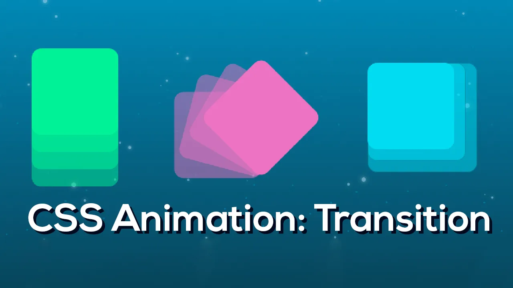

CSS (Cascading Style Sheets) frameworks are pre-written, standardized sets of CSS code that simplify the process of designing web pages by providing pre-built styling components and layout structures.

Overall, both CSS transitions and animations are powerful tools for adding interactivity and visual interest to web pages. They can be used together or separately, depending on the desired effect.
Then, you can start using the various Bootstrap classes and components in your HTML code. Here are some examples:
In this example, we have a button element with the class "btn". We use CSS transitions to animate the button's background color and size when the user hovers over it. When the button is hovered over, the background color changes from blue to red, the size increases by 20%, a box shadow is added, and the cursor changes to a pointer. These changes are animated using the "transition" property.
We also use CSS animations to rotate the button when it is focused (using the "focus" pseudo-class). The animation rotates the button 360 degrees continuously using the "keyframes" rule.
Note that the "transition" property is used twice in this example: once to animate the hover effect, and once to ensure that the rotation animation is smooth.